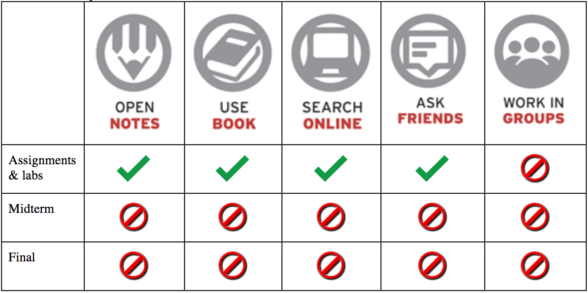

Since the data grows exponentially and becomes complex, we need computational methods to collect, store, and analyze them in order to be successful in science, engineering, business, and other professions. BMGT404, “Essential Data Skills for Business Analytics”, is an introductory programming class that meets this need. You will learn how to write computer programs in Python language to solve real-world problems and how to use tableau to explain your results as a report in a more readable way. This will be useful in your research and your jobs in the future.
This class is designed for students that want to learn to computer programming for data science. This course guides students through the basic Python programming language, from initial concepts to final data analysis using python and external packages.
The (tentative) list of topics that we plan to cover:
The course does not require any prior programming background or experiences. Students that enroll in the class are expected to have some basic familiarity with programming in other languages, at the introductory level (i.e., R, matlab, SAS, etc.), however no prior knowledge of Python is required. Since this course contains hands-on labs, (I prefer) you are expected to bring your laptop to every class (and remember to charge it, so that it lasts for the duration of the class).
At the completion of this course, students will be able to:
The tools that we will learn to use in the class include:
If you're interested in my research, here is my homepage. The best way to get in touch with me is via email, at kzhang@rhsmith.umd.edu. I am available by appointment to discuss material from class, homework assignments, the labs, etc. Email is the best way to reach me to set up an appointment, and it's also a good way to get a quick answer to a simple question.
While we do not have any required textbook for the course, the following books will be useful references for the material that we will be covering in class.
The principal textbooks for this course are:
| Think Python – How to Think Like a Computer Scientist | Online version |
| The Python Tutorial | Online version |
You are free to submit late, but there is a 10% grade penalty for every additional day after the deadline. Given the generous late submission policy, penalties are strictly enforced, and no extensions are granted. Please plan accordingly, and do not leave submission for the last minute.
Plagiarism Policy: Inevitably in a programming course, it seems that a few people will turn in work that is not their own. You should understand that it is usually easy to detect copying of programs -- even when a program is modified to try to disguise its source. Copying a program, or letting someone else copy your program, is a form of academic dishonesty and the penalties can be found here (http://www.rhsmith.umd.edu/about-us/academic-integrity).
Components of the final grade are as follows:
| Component | Weight |
| Attendance | 5%*1=5% |
| Midterm exam | 25%*1=25% |
| Quizzes | 10%*2=20% |
| Project | 15%*1=15% |
| Assignments | 5%*7=35% |
| Total | 100% |
Letter grades are assigned as follows:
| Letter | Points |
| A+ | 100-97 |
| A | 96.9-93 |
| A- | 92.9-90 |
| B+ | 89.9-87 |
| B | 86.9-83 |
| B- | 82.9-80 |
| C+ | 79.9-77 |
| C | 76.9-73 |
| C- | 72.9-70 |
| D+ | 69.9-67 |
| D | 66.9-63 |
| D- | 62.9-60 |
| F | below 60 |
The University is an academic community. Its fundamental purpose is the pursuit of knowledge. Like all other communities, the University can function properly only if its members adhere to clearly established goals and values.
The University’s Code of Academic Integrity is designed to ensure that the principles of honesty and integrity are upheld. You are expected to adhere to this Code. The Smith School does not tolerate academic dishonesty. All acts of academic dishonesty will be dealt with in accordance with the provisions of this Code. Anyone suspected of academic dishonesty will be referred to the Office of Student Conduct immediately. Please visit the website for more information on the University’s Code of Academic Integrity.
Academic Dishonesty: any of the following acts, when committed by a student, shall constitute academic dishonesty:
To help you avoid unintentional cheating, the following table lists levels of collaboration that are acceptable for each type of graded exercise. If you are ever unclear about acceptable levels of collaboration, please ask!
University policies excuse the absences of students for illness, religious observances, participation in University activities at the request of university authorities and compelling circumstances beyond the student's control. Regular attendance and participation in this class is the best way to grasp the concepts and principles being discussed. However, in the event that a class must be missed due to illness, the policy in this class is as follows:
1. For every medically necessary absence from class (lecture, recitation, or lab), a reasonable effort should be made to notify the instructor in advance of the class. When returning to class, students must bring a note identifying the date of and reason for the absence, and acknowledging that the information in the note is accurate.
2. If a student is absent more than 3 times, the instructor may require documentation signed by a health care professional.
3. If a student is absent on days when tests are scheduled, he or she is required to notify the instructor in advance, and upon returning to class, bring documentation of the illness, signed by a health care professional.
4. No students can receive A if absence 5 or more classes.
The use of cellular phones, tablets, or computers for non-course purposes will not be allowed without the prior consent of the presiding faculty member. Students using phones during class or participating in other disruptive activities will be asked to leave out of respect for fellow students and faculty. Eating or drinking during skills activities, texting/web surfings, working on other courses' material, or other activities that distract from course activities are not allowed. Audio or video recording of any course activity needs express permission of the instructors.
Here is a tentative schedule of lectures, readings, and labs for this course. We will try to keep approximately to this schedule.
(Note that we may change the schedule during the semester.)
| Session | Topic |
1 | Introduction to Python Install and run a Python program (Jupyter Notebook |
| 2 | Variables, expressions, and statements |
| 3 | Condition statements (if-else) |
| 3 | Quiz - 1 |
| 4 | Loop structure |
| 5 | Lists, tuples, and dictionaries |
| 6 | Functions, parameters, and recursion |
| 7 | File operations |
| 8 | String operations |
| 9 | Midterm |
| 10 | Modules |
| 11 | Regular expression |
| 12 | Visualization |
| 12 | Quiz - 2 |
| 13 | Database operations (MySQL) |
| 14 | Data manipulation: Pandas |
| 15 | Scientific computing: NumPy |
| 16 | Text mining: NLTK |
| 17 | Machine learning in Python |